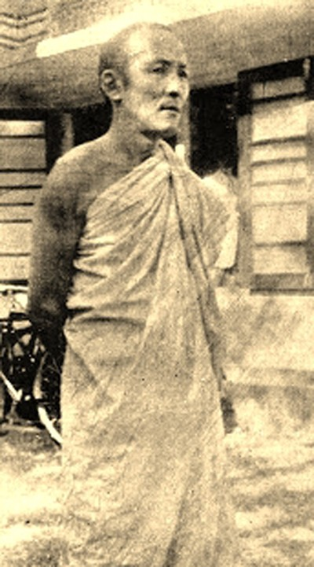

Associated Historical Narratives
This section brings together historical narratives associated with Sangchen Thongdrol Ling drawn from scholarly research, archival records, and documented accounts. While some reflect established historical understanding, others represent interpretations by scholars that require careful contextual reading. They are presented here to offer a broader perspective on the monastery’s place within the historical and cultural landscape of the region.
The accounts below draw on cited scholarly sources and are presented for context and further inquiry.
S. Mahinda and Monastic Associations
The Venerable S. Mahinda (born Pempa Thondup / Sarki Tshering in 1901), later recognised in Sri Lanka as a national poet and influential figure in the country’s freedom movement, is identified in scholarly research as being of Sikkimese origin and belonging to the Shalngo family.

Portrait of Venerable S. Mahinda (1901–1951), associated in scholarly accounts with the monastic network linked to Ging Gompa.
A study published in the Bulletin of Tibetology (Pema Wangchuk Dorjee) notes that some Sri Lankan sources—particularly celebratory accounts—have suggested that S. Mahinda’s father was the head monk of Bhutia Busty Monastery in Darjeeling. This claim, however, remains unsubstantiated. The same study indicates that subsequent references more plausibly associate his family with the monastic network connected to Ging Gompa (Sangchen Thongdrol Ling), a branch of Pemayangtse Monastery.
These narratives further describe a memory of the monastery’s relocation during the British period—from the Victoria Pleasance area (near present-day Gorkha Rang Manch Bhavan, below St. Andrew’s Church) to Ging in 1879—sometimes framed in Sri Lankan writings within a broader interpretation of Buddhist–colonial tensions. The study cautions that such interpretations may reflect later ideological framing and require careful distinction from established historical records.
Thutob Namgyal and Ging Monastery
The confinement of Chogyal Thutob Namgyal (r. 1874–1914) at Ging Monastery forms part of a wider period of political tension between the Sikkimese court and British colonial administration in the late nineteenth century. During this time, authority within Sikkim was increasingly mediated through the office of the British Political Officer, particularly under John Claude White.
In 1891, following a period of sustained administrative friction, the Chogyal and Maharani Yeshe Dolma attempted to move toward Tibet. They were intercepted in the border region and subsequently handed over to British authorities. Accounts indicate that they were first held under restrictive conditions in Gangtok before being transferred out of Sikkim to the Darjeeling hills.
Ging Monastery, located near Darjeeling and maintaining institutional links with Pemayangtse, was used as a site of controlled detention. During this period, the movement, retinue, and resources of the Chogyal were strictly limited. Contemporary records indicate that only a small number of attendants were permitted to remain, and that access to provisions and finances was closely regulated.
Contemporary accounts further record that the British Political Officer, John Claude White, conveyed to the detained royal family that the Lieutenant Governor had directed their immediate transfer to Ging Monastery, stating that “it has been arranged that Their Highnesses should stay at Ging monastery, so they must go there immediately; His Highness will be permitted to have no more than twelve attendants and three horses, and the remainder are to be sent back.” This instruction reflects the administrative control exercised during the period of confinement.
Source: The Royal History of Sikkim, p. 197 (Ardussi et al.)
While at Ging, the Chogyal’s authority within Sikkim was effectively curtailed, with governance increasingly directed through British administrative channels. The period also reflects a broader pattern of indirect control, where sovereignty was constrained through supervision, relocation, and administrative restructuring rather than formal deposition.
This phase of confinement was followed by a transfer to Kurseong in the early 1890s, where the royal household remained under continued supervision. Despite these conditions, historical accounts note that this period also coincided with efforts to preserve aspects of Sikkimese historical memory, including the composition of important historical narratives associated with the royal court.
The episode remains a significant moment in the historical relationship between Sikkim and the British administration, illustrating both the limits imposed on the Namgyal dynasty during this period and the resilience of its institutional and cultural continuity.
Accounts drawn from Sikkimese royal chronicles and subsequent historical interpretations.